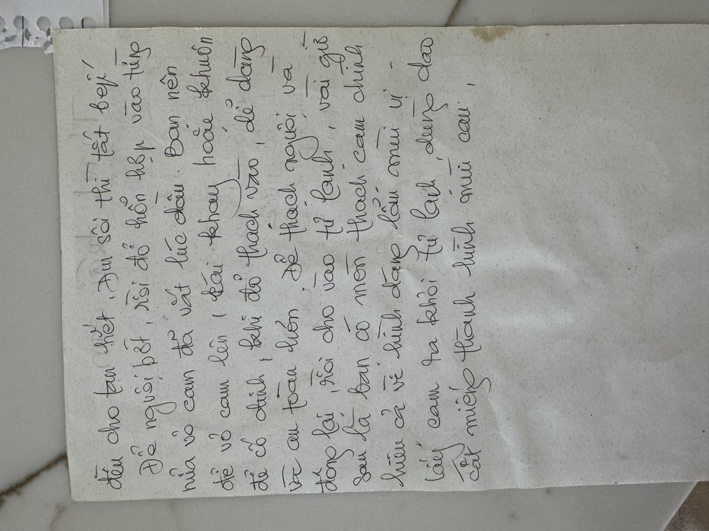

← Back to recipes

Thạch Trái Cam
Orange Jelly
From Mẹ — Oanh
Nguyên liệu · Ingredients
- 9 oranges, firm and round
- 4 packets unflavored gelatin (about 1 oz each)
- 2 cups water
- Sugar or honey (đường hoặc mật ong), to taste
Cách làm · Instructions
- Cut the oranges in half crosswise. Carefully squeeze out all the juice into a bowl — use a citrus reamer or your hands, but be gentle with the shells. You want the orange halves to stay intact, like little cups. Strain the juice through a mesh sieve to remove seeds and pulp.
- Clean out the orange shells thoroughly, scraping away any remaining membrane and pulp with a spoon. The inside should be as smooth as possible so the jelly sets cleanly. Try to keep the shells intact.
- Arrange the cleaned orange shells cut-side up in a muffin tin or on a tray where they can sit upright without tipping. This keeps them steady while you pour the liquid in.
- In a small bowl, sprinkle the gelatin packets over ½ cup of cold water. Let it sit for 5 minutes to bloom — the gelatin will absorb the water and turn spongy.
- In a saucepan, combine the orange juice, remaining 1½ cups water, and sugar. Heat over medium until just simmering and the sugar dissolves. Do not boil — boiling can weaken the gelatin. Taste and adjust sweetness. If you prefer honey, add it now.
- Remove from heat and add the bloomed gelatin. Stir gently until the gelatin is completely dissolved, about 2 minutes. No granules should remain.
- Carefully pour the warm orange-gelatin mixture into the prepared orange shell cups, filling them to just below the rim. A measuring cup with a spout or a ladle makes this easier.
- Refrigerate for at least 4 hours, or overnight, until the jelly is completely firm.
- When ready to serve, use a sharp knife to cut each orange half into wedges. The jelly should hold perfectly inside the rind, looking like real orange slices.
Công thức gốc · Original handwritten recipe

❦
A recipe from Mẹ's kitchen